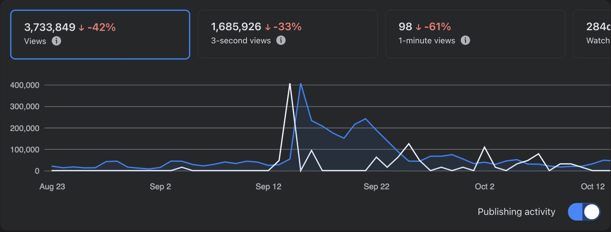
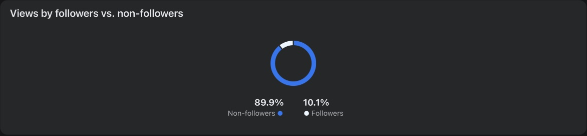
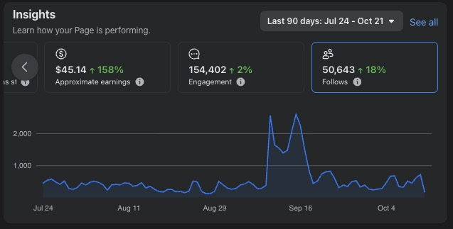

The receipts
Don't take my word for it. Here's the dashboard.
These are straight from the Meta professional dashboard of the page I run. Cropped to remove client faces and page details, nothing else changed. Down arrows included, because real growth comes in waves.



Snapshot exported 22 October 2026. The 13.4M views and 111k followers cover the full 10-month period; the screenshots show the most recent 60- and 90-day windows.
What happened after the views
Views don't pay the bills. The system behind them does.
One real campaign: a free in-person event series for a high-consideration service, sold to an audience 8,000 km away. Here's the funnel, deduplicated against source data, not the platform's inflated version.
Waitlist sign-ups5,140
↓ 33% registered for a specific session
Unique registrations1,690
~500/moInbound leads scored and routed by AI, no manual triage
Days → instantFrom payment to booking confirmation
20,000+Contacts segmented by intent, not just "subscribed"
3 hrs → 30 minPer client deliverable, with an AI drafting pipeline and a human review gate
Let's talk
Your audience is already out there. Let's build the thing that catches it.
Grab a time that suits you. Come ready to tell me what you sell, who you sell it to and where it's getting stuck.